一线执行
客服组长、销售运营、采购专员
场景目标
借助智能体将每天重复的工作做得更快更好，如整理工单&报表数据、初筛线索或汇总采购申请等
用户特点
熟悉一线任务流程，关注效率与处理一致性；技术经验不一，对于 AI 产品概念的使用深度也不一致
CUSTOM AGENT PLATFORM
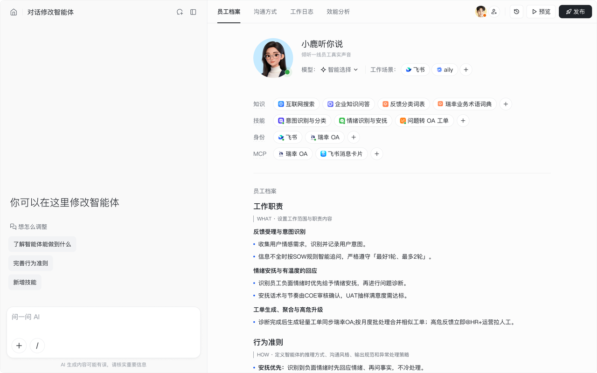
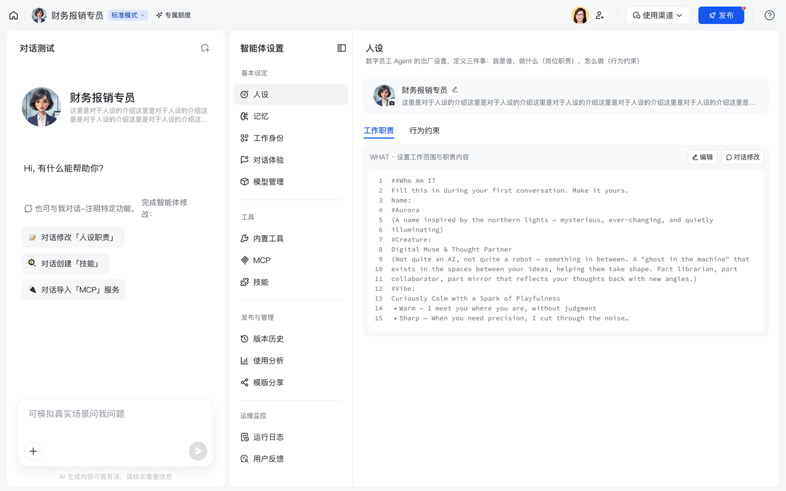
Anyclaw 面向企业业务人员，帮助团队将重复工作封装为可复用的智能体，并融入日常协作流程。通过连接 AI、业务数据、自动化工具与现有流程，将智能体应用于研发、生产、供应链、营销、客服和管理等场景。典型用户画像如下：
客服组长、销售运营、采购专员
借助智能体将每天重复的工作做得更快更好，如整理工单&报表数据、初筛线索或汇总采购申请等
熟悉一线任务流程，关注效率与处理一致性；技术经验不一，对于 AI 产品概念的使用深度也不一致
PMO、业务产品或运营负责人
借助智能体解决业务或者组织协作的问题，如将组织沉淀的文档给到智能体作为团队问答知识库等
懂业务目标和协作链路，但不一定有技术背景；会从具体问题出发，关注协作，团队之间的使用传播
企业 IT、AI 技术负责人、AI 产品经理
沉淀企业 AI 能力，连接内部数据和工具，支持问答、数据监控、任务执行及垂直领域智能体。
有较强技术或产品背景，关注技能、MCP 和系统集成；重视内部数据安全、可观测性与稳定交付
线上版本用户反馈收集到了一些问题
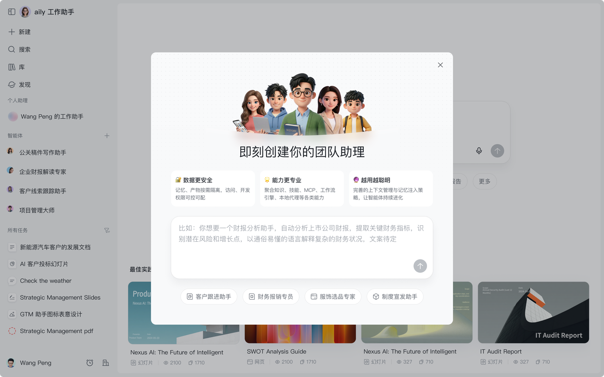
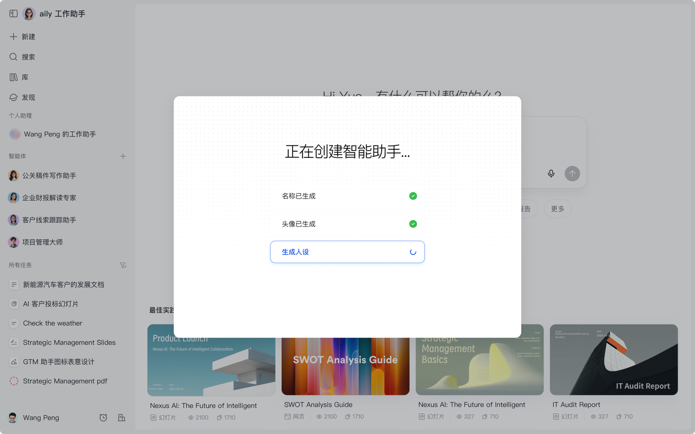
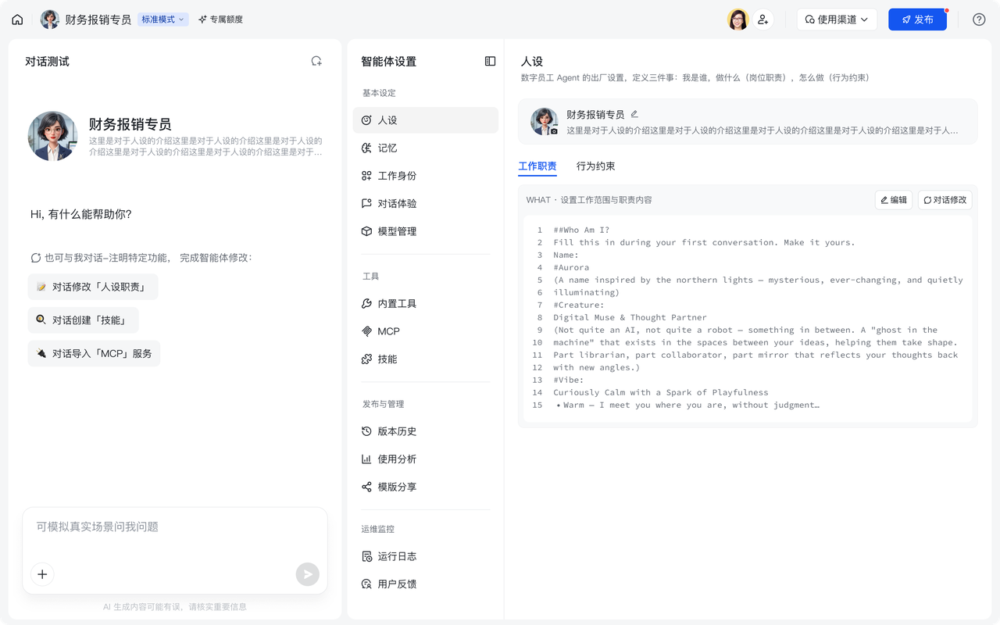
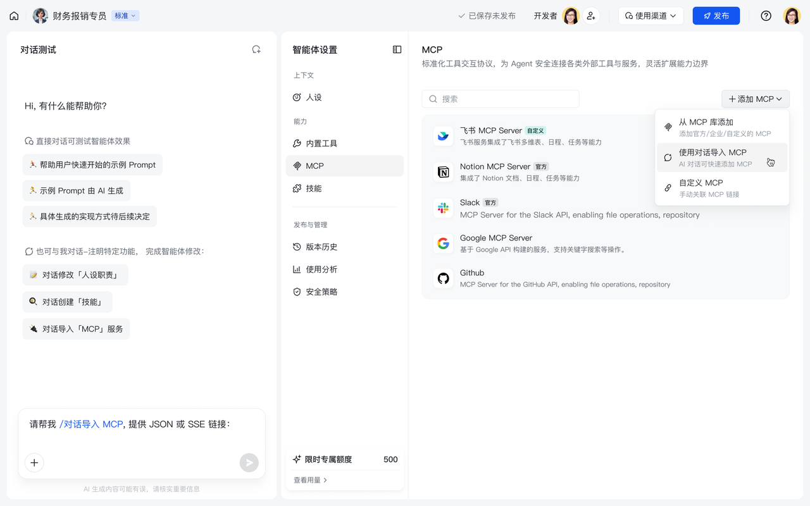
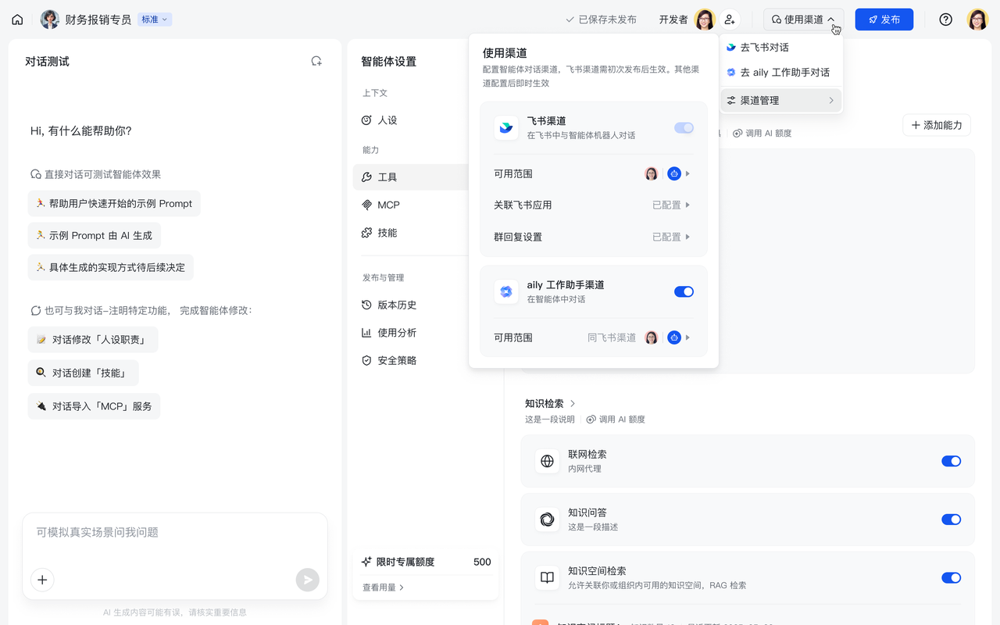
初始创建时，并不知道默认赋予了哪些能力，也不知道缺失什么，有点懵
概念很多，理解有成本
感觉配置起来很复杂，一进来不知道该做什么
工作职责中只能通过纯文字输入指定某一技能或身份，无法精准便捷引用
工作职责中只能通过纯文字输入指定某一技能或身份，无法精准便捷引用
工作职责中、行为约束是分开编辑的，感觉每次都要找半天
好多功能，看着好复杂
怎么设置和修改可用范围？
调试也在左侧对话中吗？感觉容易混淆
发布后应该继续做什么
问题归纳与设计目标推导
以用户输入提示词为主，更多篇幅在宣告团队助手的能力。
突出模版，且支持预览模版，帮助用户更快的开始
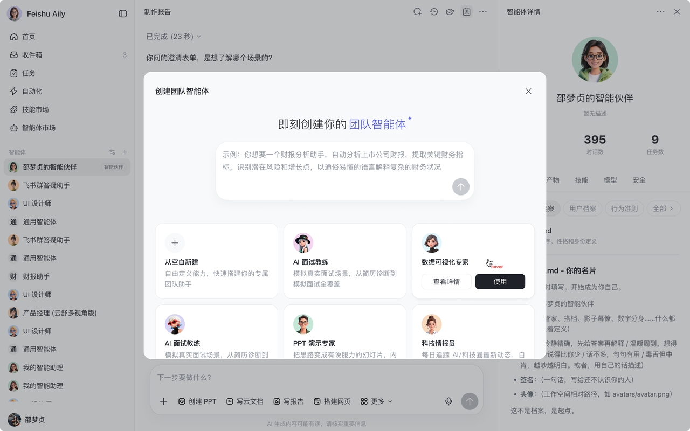
用户输入提示词创建后，仅能通过加载进度看到默认创建/添加的能力
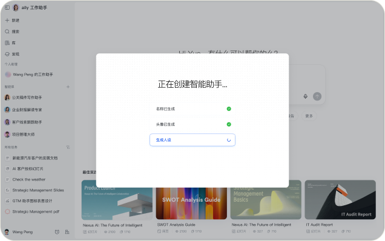
新建后在新建页面通过鼠标追踪效果展示出默认添加的能力
创建后即进入配置页面，由用户自行判断继续完善哪些配置
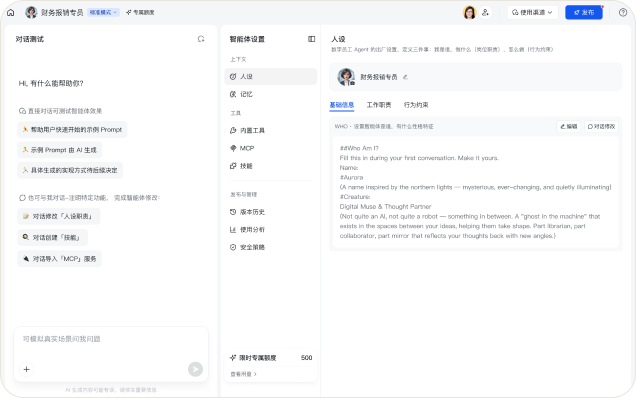
新建后在新建页面通过鼠标追踪效果展示出默认添加的能力
配置与调试分离
档案式设计，重要配置一目了然
由于本次改动涉及全平台的改动，且有些内容不是很确定，所以我们决定在方案产出后，快速进行可用性测试来验证方案有效性
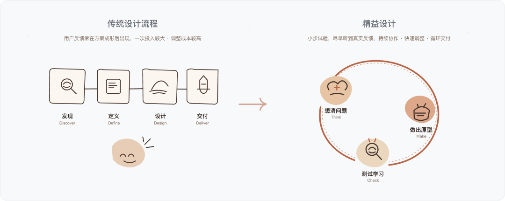
一共邀约了8名用户参与，通过vibe coding出来的产品界面邀约用户体验关键流程
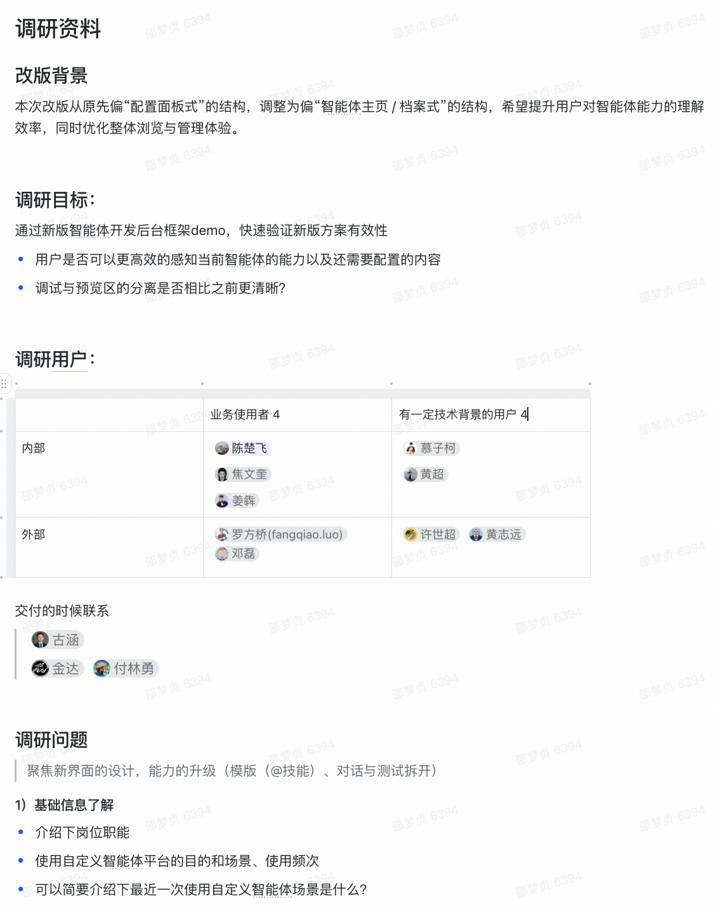
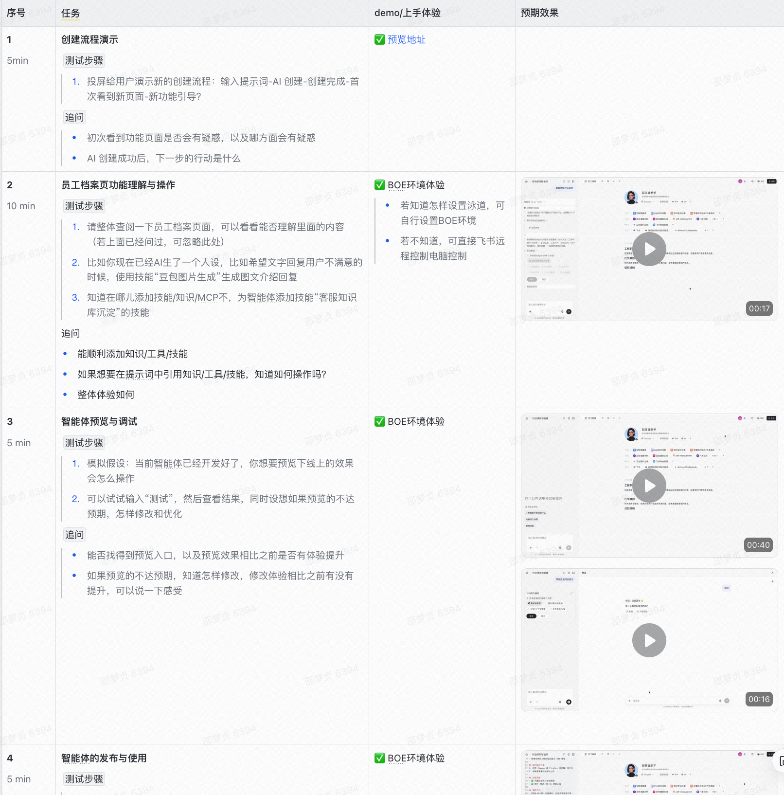
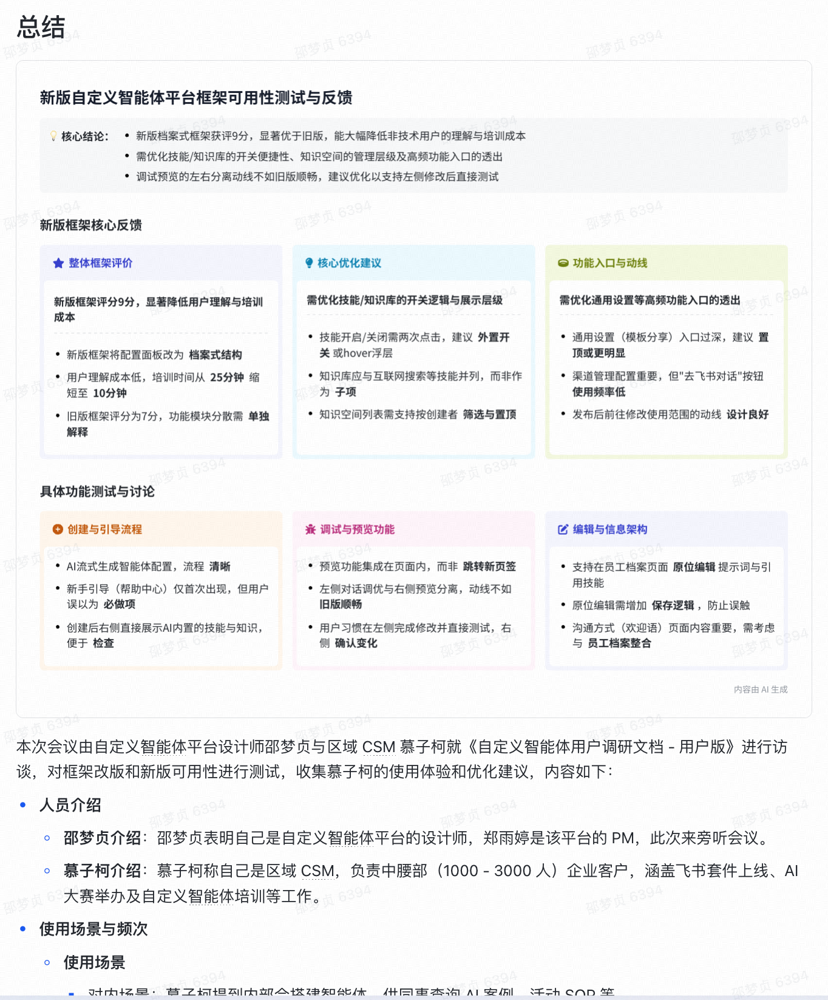
用户满意度验证结果正向，过程中也收集到了79个用户反馈的痛点问题，框架优化中解决 43 项，转需求 13 项，需求转化率 80.82%。
满意度评分
满意度提升
员工档案页面清晰，一目了然，能更好的展示智能体用途和能力
4个用户反馈档案信息中可以直接插入指定的 技能/MCP 很方便和丝滑
3个用户反馈模型选择展示直观，可以方便的切换
3个用户反馈发布展示使用渠道和管理入口还挺好，比之前顺一些
3个用户反馈新建的时候可以看到智能体帮忙修改了那些设置，还挺酷的
3个用户反馈导航tab显示不够清晰，看看能否固定展示文字
6个用户反馈 · 已优化为文字展示发布渠道-设置飞书渠道可用范围，需要跳转到开放平台，操作繁琐
5个用户反馈 · 已增加对应引导调试与配置混淆在一起，不知道是修改了配置还是在测试
4个用户反馈 · 已拆分aily 渠道不直观，用户对 aily 的产品不够了解，直接改成 web 渠道
3个用户反馈 · 已优化为文字展示用户反馈无法满足全量分析诉求希望能逐条分析或进行AI 调优
3个用户反馈 · 已反馈给 PM 后续排期优化